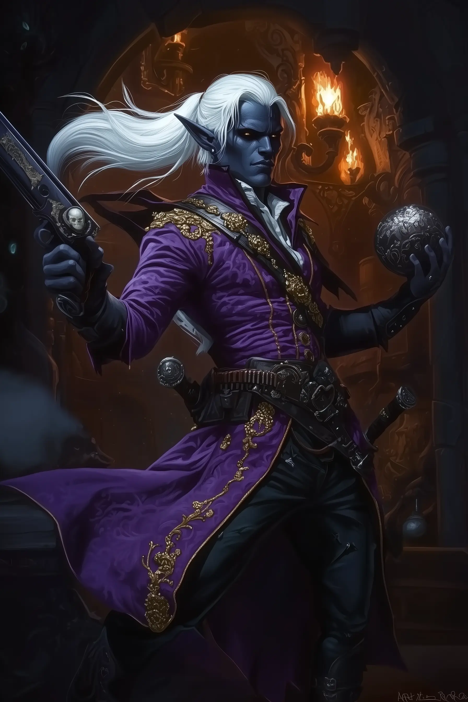
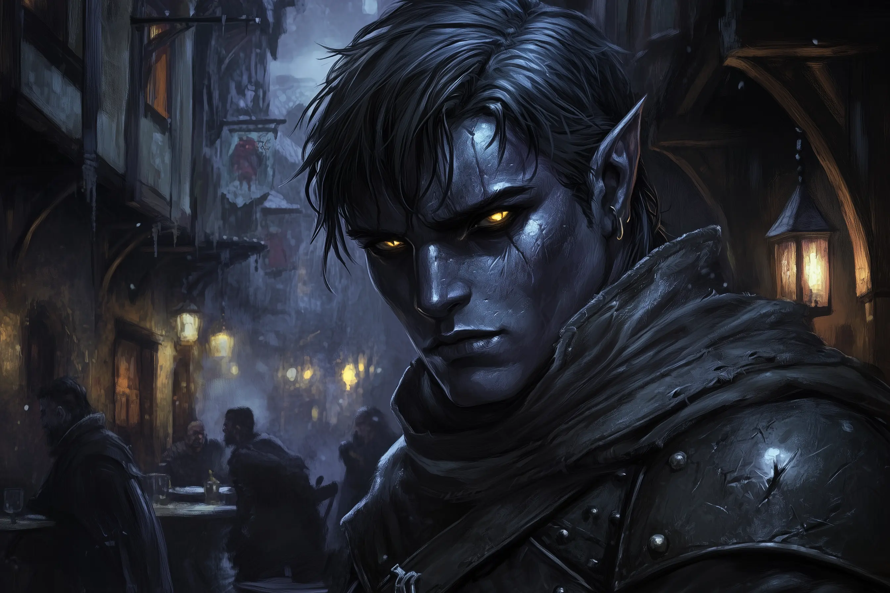
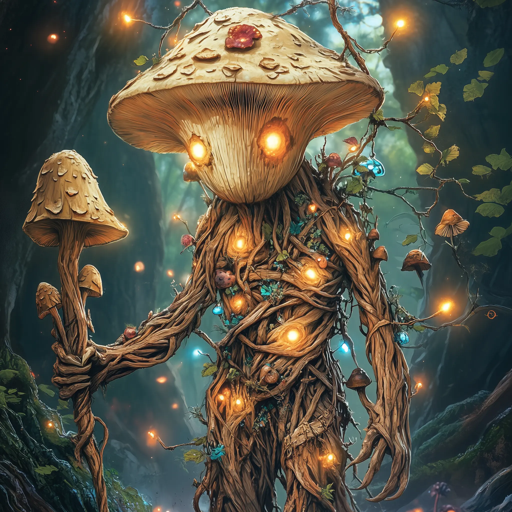
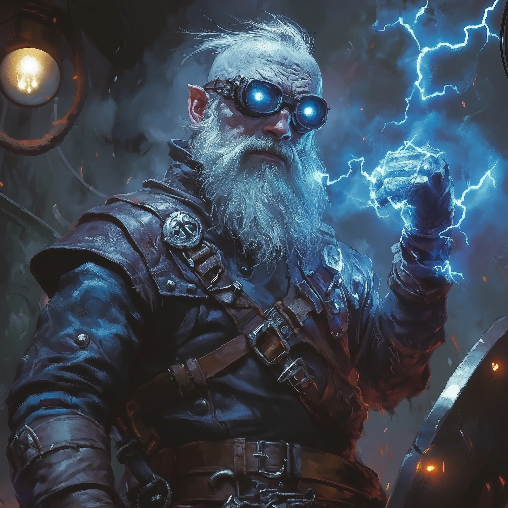
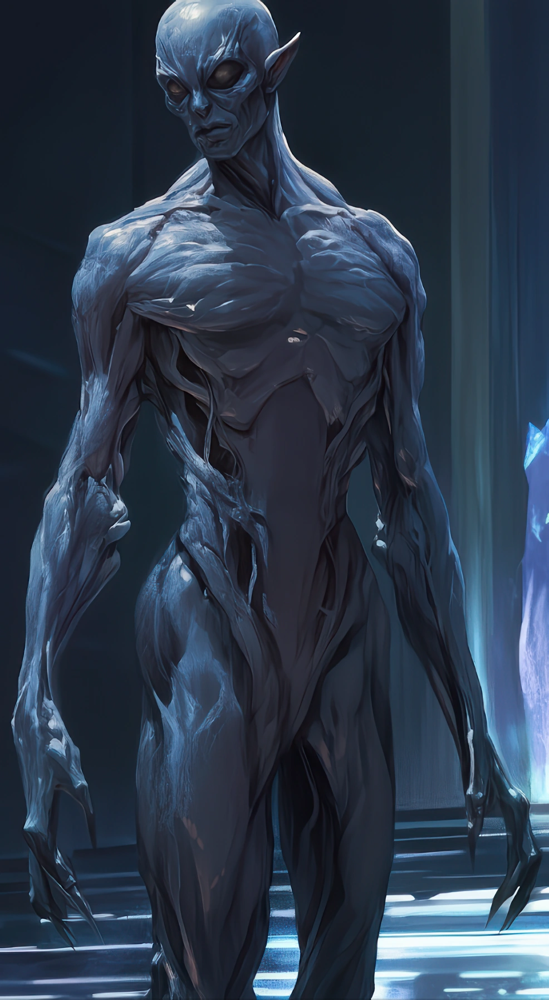
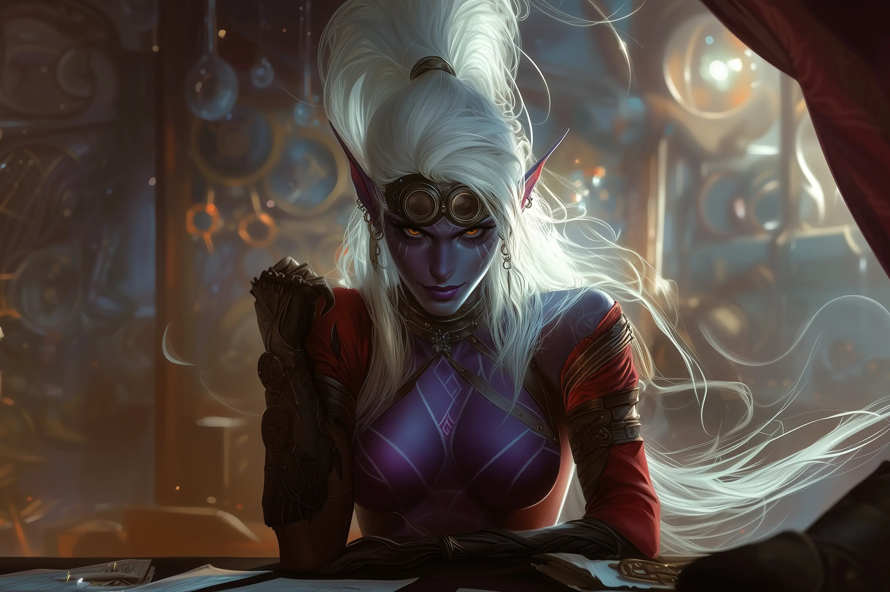

Cast of Player Characters - Lost Mine of the Drow
This document provides a quick reference for the main characters in the "Lost Mine of the Drow" campaign.
Player Chars (The T'alzar Strike Team)
- Rav'ithar 
- Race/Class: Male Drow, Whispers Bard (Level 5)
- Role: Party Leader
-
Background Notes: From a lesser T'alzar faction in Vlyn'darastyl, family adopted into the main house. His renowned "adventures" are fabrications based on his late father's exploits, a secret he guards fiercely to maintain his status and income. This mission is his chance for genuine heroism and new literary material. Mentors Malaggar. Carries a gun named "Fear."
-
Malaggar (Youngest Son of House T'alzar) 
- Race/Class: Male Drow, Battle Master Fighter (Level 5)
- Role: Frontline Combat
-
Background Notes: Youngest son of House T'alzar, sent on this mission to prove his worth and earn his place in the family hierarchy. Eager to prove himself but somewhat naive about the dangers they face. Wields a family heirloom sword.
-
Haribo 
- Race/Class: Male Drow, Arcane Trickster Rogue (Level 5)
- Role: Stealth and Utility
-
Background Notes: Former street urchin who learned to survive in the harsh underbelly of drow society. Skilled at infiltration and information gathering. Has a network of contacts throughout the Underdark. Carries a collection of lockpicks and small tools.
-
Clank 
- Race/Class: Male Drow, Artillerist Artificer (Level 5)
- Role: Support and Crafting
-
Background Notes: Brilliant inventor and tinkerer who creates magical devices and weapons. Somewhat eccentric but highly skilled. His inventions often prove crucial to the team's success. Carries a variety of gadgets and tools.
-
Bentham 
- Race/Class: Male Drow, Shadow Monk (Level 5)
- Role: Stealth and Mobility
-
Background Notes: Former member of a secretive drow assassin guild who left to pursue his own path. Skilled in stealth and hand-to-hand combat. Has a mysterious past that he rarely discusses. Moves with supernatural grace and speed.
-
Zyntra 
- Race/Class: Female Drow, Hexblade Warlock (Level 5)
- Role: Magic and Damage
- Background Notes: Made a pact with a mysterious entity for power, though the details of her pact remain unclear. Skilled in both melee combat and spellcasting. Has a somewhat dark and brooding personality. Wields a magical weapon that seems to have a mind of its own.
{kind=link}
{kind=link}
{kind=link}
{kind=link}
{kind=link}
{kind=link}
Campaign Overview
The party has been assembled by House T'alzar for a critical mission: infiltrate and investigate the activities of rival drow houses that may be plotting against House T'alzar. The mission is dangerous and the stakes are high, but the rewards for success could secure the party's positions within the house hierarchy.
The campaign is set in the Underdark, specifically in and around the drow city of Vlyn'darastyl, where political intrigue and danger lurk around every corner.